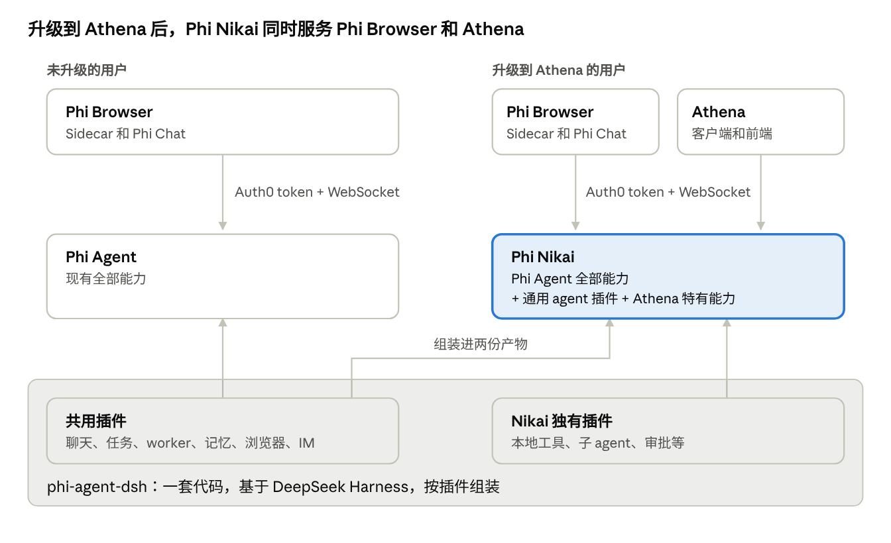
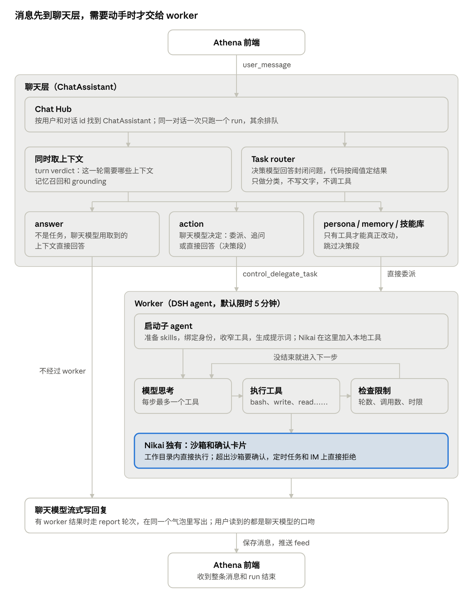
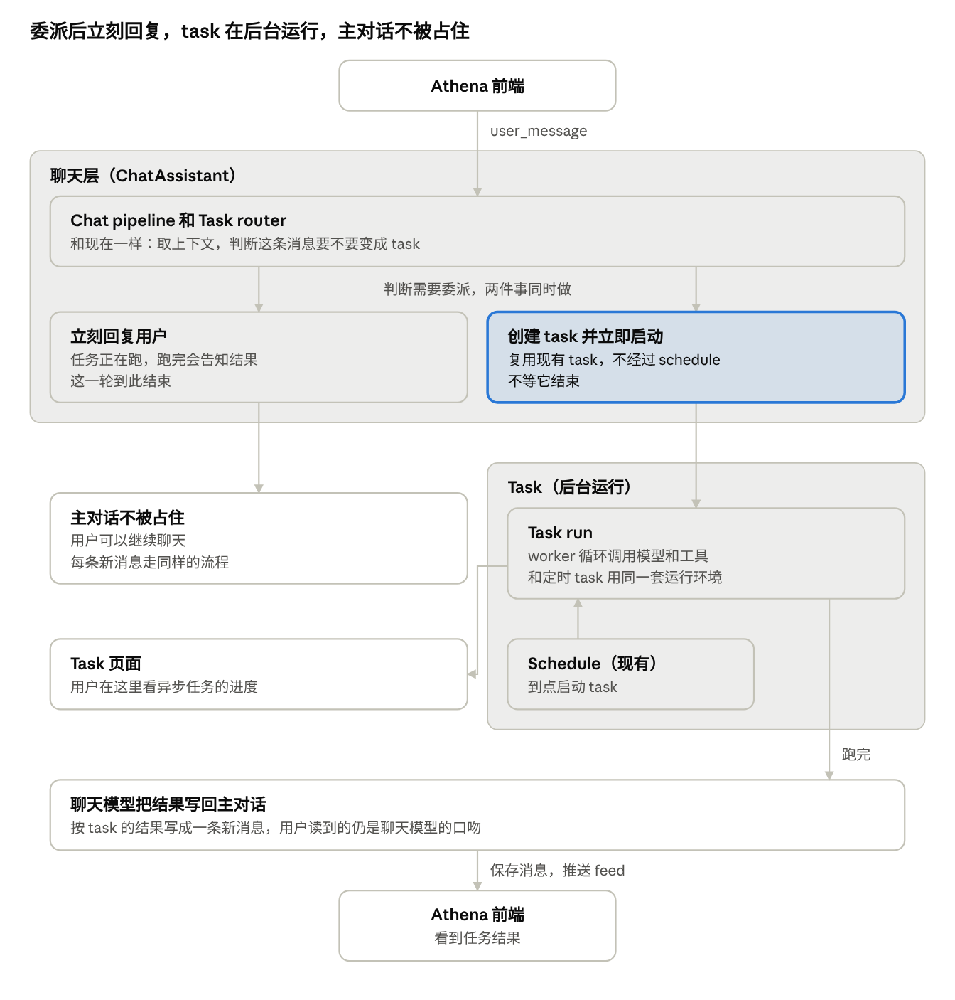

Athena Chat 开发测试说明
更新于 2026-11-04
Phi Agent 正在开发对 Athena 的适配。这份文档说明在此期间，Athena 的聊天功能怎么开发和测试。
为什么叫 Nikai
Phi Nikai 是暂时起的名字，先这么叫着。
雅典卫城上有一座胜利女神雅典娜神庙。神庙外围的护墙上，刻着一群长翅膀的胜利女神：她们牵牛献祭，装点战利品，把胜利献给自己的守护者雅典娜。
一位胜利女神叫 Nike。
一群，叫 Nikai。
我们的产品叫 Athena，而这个 agent 就是为 Athena 服务的，名字就这么呼应上了。本来可以直接叫 Nike，但这个词一说出来，大家想到的大概都是那个钩子✔🌚✔。所以用了复数，反而更贴切：以后站在 Athena 身后的，是一个主对话和一群替它跑任务的 task。
当前进展
Phi Agent 这边正在做适配，聊天、记忆、任务和工具都由它提供。在此期间，Athena 的客户端和界面可以这样开发和测试：
- 对话走目前的 WebSocket 接口，示例见后文。
- 开发和调试时，先固定用一个对话 id。
- 之后会支持一个主对话和多个 task 对话，worker 也会异步执行任务。这部分还在开发，接口有变化时我们会同步。
- 需要什么能力，可以随时提给 Phi Agent 这边，我们做成插件来支持。
Phi Agent 和 Phi Nikai 的关系
Phi Nikai 是 Phi Agent 的超集。两者来自同一份代码，鉴权和调用方式相同，Athena 之后会用 Phi Nikai。
产品规划上，现有的 Phi Browser + Phi Agent 会保留。升级到 Athena 之后，Phi Browser 和 Athena 都连同一个 Phi Nikai，由它同时提供服务。Phi Nikai 包含 Phi Agent 的全部能力，所以两者是一脉相承的。

当初把 Phi Agent 迁到 DeepSeek Harness，就是为了能这样按插件拼装和升级。Phi Agent 上新增的能力，Phi Nikai 会自动带上。
| Phi Agent | Phi Nikai | |
|---|---|---|
| 谁在用 | 未升级的 Phi Browser | 升级后的 Phi Browser 和 Athena |
| 能力 | 现有全部能力 | Phi Agent 全部能力、通用 agent 插件，以后再加 Athena 特有能力 |
| 鉴权和调用 | Auth0 token + WebSocket | 相同 |
| 现状 | 已发布 | 代码在 feature/phi-nikai 分支，还没合入 staging，CI 也还没打包 |
现在先连 Phi Agent 开发。以后换成 Phi Nikai，聊天这部分不用改代码。
Phi Nikai 加入的 DSH 插件
Phi Nikai 在 Phi Agent 之上加了这些官方插件，让 agent 能在用户电脑上运行命令、读写文件。大多数插件不用改，改造集中在环境变量、工作目录和确认卡片。下表是 feature/phi-nikai 分支上的现状。
| 分类 | 插件 | 干什么 | 改造 |
|---|---|---|---|
| 命令 | subprocess-local |
启动子进程 | 继承后扩展：去掉 Phi 自己的环境变量，补上用户的 HOME、USER 和常用工具目录 |
| 命令 | sandbox-local、sandbox-policy |
macOS 沙箱和它的规则 | 配置：workspace-write，可写目录是工作目录 ~/.phi-nikai |
| 命令 | tool-bash、bash-sandbox |
模型的 bash 工具，命令在沙箱里运行 |
不用改 |
| 命令 | shell-env |
命令运行时的 DSH_* 环境变量 |
不用改 |
| 命令 | jobs-local、tool-jobs |
后台命令：job_list、job_output、job_kill |
不用改。run 结束时，后台命令也会结束 |
| 命令 | user-approval |
命令要出沙箱时询问用户 | 接到 Phi 的确认卡片。定时任务和 IM 上没人能确认，直接拒绝 |
| 文件 | tool-fs |
read、read_image、write、edit |
不用改 |
| 文件 | tool-fs-search |
glob、grep |
打包时带上 rg 可执行文件 |
| 文件 | fs-sandbox |
把文件修改限制在工作目录 | 不用改 |
| 文件 | fs-observation-policy |
编辑文件前必须先读过 | 不用改 |
| 长输出 | spill-local、spill-policy |
过长的工具结果存成文件，模型只看预览 | 不用改 |
| 长对话 | token-meter、compaction-basic、compaction-tool-result-pruner |
测量上下文占用，自动压缩旧对话，裁剪过长的工具结果 | 配置：模型上下文写 200000。这是估算值，因为网关没有上报 |
| 长对话 | session-checkpoint-policy |
保存断点，崩溃时不丢模型请求和工具结果 | 不用改 |
| 规划 | tool-todo |
模型的待办列表 todo_write |
配置：同时只有一项进行中 |
| 规划 | goal、goal-round-driver、tool-goal |
持久化的目标，工具是 get_goal、create_goal、update_goal |
不用改。实测委派的 run 创建目标并回复后就结束，不会自动继续 |
| 子 agent | tool-subagent |
模型派子 agent 的 subagent 工具 |
配置：只在前台运行，最多一层。另外把子 agent 绑定到发起它的 run，否则 Phi 的工具会拒绝它 |
| 其他 | agent-instructions |
读取工作目录里的 AGENTS.md、CLAUDE.md |
配置：上限 64 KB |
| 其他 | tool-call-timeout-policy |
工具调用超时 | 不用改 |
除了表里的改造，还有一个自有插件 phi-nikai-local-tools：它把这些工具加到 run 里，并把工作目录设成新对话的起始目录。目前只支持 macOS。
暂时没加的插件：
mcp-client：每个 MCP 服务器要配一项，现在还没有要接的服务器。permission-presets：服务于权限预设选择器，现在还没有这个界面。它还会让复用的对话在存储里冲突，要和修复一起加。tool-subagent-control：服务于后台子 agent，现在子 agent 只在前台运行。repeat-tool-reminder：在当前 DSH 版本下，打成单文件后加载就崩溃。
对 Athena 界面的影响： 这些工具的调用会出现在消息里。Sidecar 目前按普通未知工具显示，没有命令卡片、diff 或权限设置；确认卡片的文案也只有英文。
一条消息的执行流程
消息先到聊天层，需要动手时才交给 worker，最后由聊天模型写出回复。Phi Nikai 的聊天流程和 Phi Agent 相同，差别只在 worker 多了本地工具。

| 阶段 | 做什么 | 代码位置 |
|---|---|---|
| Chat pipeline | 找到对话的 ChatAssistant，同时取上下文并跑 task router |
plugins/chat/src/lib/sidecar-chat.ts、chat/src/engine/assistant.ts |
| Task router | 决策模型回答封闭问题，代码按阈值得出结论。失败时不猜结果，由聊天模型自己判断 | chat/src/execution/task-router.ts |
| 到 worker | 聊天模型调用 control_delegate_task 并写出 objective，用户先看到一句占位状态。任务默认限时 5 分钟 |
plugins/chat/src/lib/worker-task-executor.ts、delegated-worker.ts |
| Worker | DSH agent 循环调用模型和工具，每步最多一个工具。进度按 worker_progress、reasoning_summary_* 推给前端 |
plugins/worker/src/agent-tools.ts、plugins/guard/src |
| 返回用户 | 先推 worker 生成的文件，再由聊天模型根据结果写回复。Hub 保存消息，推送 feed 和 RUN_FINISHED |
chat/src/engine/assistant.ts、prompts/turn-notes.ts |
worker 这一步现在是阻塞的，聊天这一轮会一直等它结束。以后的异步执行改的就是这里。前端只需要跟一条 WebSocket，看到的是状态、进度、确认卡片和最终消息。
以上按 feature/phi-nikai 分支的代码整理，plugins/ 开头的路径都在 phi-agent-dsh/ 下。
规划：异步 worker
以后委派给 worker 的任务会在后台运行，主对话不再被占住。这部分还没实现，下面是目前的设计。
现在 worker 执行时，聊天这一轮要等它结束，用户这期间发的消息只能排队。改成异步后，用户可以一边等任务，一边继续聊天，体验和 Claude Code 的 task 类似。

- 判断： 用户的消息经过 chat pipeline 和 task router，判断需要变成 task 委派给 worker。这一步和现在一样。
- 立即启动： chat pipeline 创建 task 并立即启动，不等它结束。
- 立刻回复： 同时告诉用户任务正在跑，跑完会告知结果。这一轮到此结束，用户可以继续在主对话里聊天。
- 后台执行： worker 在 task run 里完成任务。用户想看进度，可以去 task 页面。
- 告知结果： task 跑完后，聊天模型把结果写回主对话。
复用现有的 task
异步 task 不另做一套，直接复用现在的 task。现在的 task 配合 schedule 到点执行，异步 task 则是创建后立即执行。
| 定时 task（现有） | 异步 task（规划） | |
|---|---|---|
| 谁创建 | 用户在 task 页面创建，或 worker 调用 schedule.create |
chat pipeline 委派时创建 |
| 何时执行 | schedule 到点 | 创建后立即执行 |
| 怎么执行 | task 的 worker 运行环境 | 相同 |
| 怎么看进度 | task 页面 | 相同 |
| 结果去哪 | 报告写回来源对话 | 相同 |
现有 task 已经有这些接口，前端可以先了解：/api/tasks 管理任务和运行记录；报告以 task_report 事件推送，并保存在消息的 metadata.taskReport 里。Phi Chat 里的 Tasks 页面就是基于它们做的。
主对话的权限（设计中）
Athena 主对话的权限还在设计，思路参考 Claude Code 和 Codex：加一个 auto 权限审批模型，用户如果要求，也可以开启 bypass 权限。异步 task 直接继承用户的选择。
一轮对话
建对话、连 socket、订阅 feed、发消息，然后按 feed 推来的整条消息渲染，前端不用自己拼消息。
下面这段在 Phi Agent 和 Phi Nikai 上各跑过两次，都返回了模型回复。需要 Node 22 以上或浏览器，以及 uuid 包；浏览器里的 fetch 因为 REST 没有放开跨域，要走代理或由客户端代发。
import { v7 as uuidv7 } from "uuid";
const BASE = "http://127.0.0.1:8788";
const TOKEN = "<Auth0 access token>";
const THREAD_ID = "01a1a6b8-41fa-75ff-a98f-b95753073a2a"; // one fixed conversation for now
// 1. Create the conversation. Repeating this for an existing id is harmless.
const created = await fetch(`${BASE}/api/v1/chats`, {
method: "POST",
headers: {
authorization: `Bearer ${TOKEN}`,
"content-type": "application/json",
"x-phi-chat-scope": "global",
},
body: JSON.stringify({ id: THREAD_ID, title: "Athena dev" }),
});
if (!created.ok) throw new Error(`create chat: ${created.status}`);
// 2. Connect, follow the conversation, send one message.
const url = new URL("/ws/phi-agent/execute", BASE);
url.protocol = "ws:";
url.searchParams.set("chat_scope", "global");
url.searchParams.set("token", TOKEN);
const ws = new WebSocket(url);
ws.onopen = () => {
ws.send(JSON.stringify({ type: "feed_subscribe", v: 1, threadId: THREAD_ID }));
const messageId = uuidv7();
ws.send(
JSON.stringify({
type: "user_message",
threadId: THREAD_ID,
runId: uuidv7(),
clientMsgId: messageId,
userMessageId: messageId,
text: "Reply with the single word: pong",
}),
);
};
// 3. Render whole messages; ignore every frame you do not know.
const messages = new Map();
let started = false;
ws.onmessage = ({ data }) => {
const frame = JSON.parse(data);
if (frame.type !== "feed") return;
if (frame.op === "snapshot") {
messages.clear();
for (const message of frame.messages) messages.set(message.id, message);
}
if (frame.op === "upsert") messages.set(frame.message.id, frame.message);
if (frame.op === "run" && frame.run.status !== "idle") started = true;
if (frame.op === "run" && frame.run.status === "idle" && started) {
const last = [...messages.values()].at(-1);
console.log(last.parts.filter((p) => p.type === "text").map((p) => p.text).join(""));
ws.close();
}
};
发送
| 消息 | 什么时候用 |
|---|---|
feed_subscribe { v: 1, threadId } |
打开对话或重连后 |
user_message { threadId, runId, clientMsgId, userMessageId, text, attachments?, forwarded? } |
用户发消息。所有 id 都用 UUID v7，消息按 id 排序 |
cancel { threadId, runId } |
用户点停止 |
interject { threadId, runId, text } |
run 进行中插话，不打断它 |
user_action_response { threadId, runId, requestId, selectedOptionId } |
回答确认卡片 |
Phi Nikai 执行需要确认的本地命令时会发卡片。没做卡片的话，这类命令会一直等到超时。
接收
| 帧 | 内容 | 前端怎么做 |
|---|---|---|
feed / snapshot |
对话的全部消息和 run 状态 | 整个替换本地列表 |
feed / upsert |
一条消息的完整新内容 | 按 id 替换 |
feed / run |
status（idle、preparing、running）、排队消息、待回答的卡片、错误 |
更新状态和停止按钮 |
feed / error |
chat_not_found、chat_deleted、forbidden、internal |
提示并结束订阅 |
feed_heartbeat |
心跳 | 忽略 |
event |
原始 AG-UI 事件，包括逐字文本 | 只在需要逐字效果时使用 |
- 未知内容： 收到不认识的帧或
parts类型就忽略。消息里除了文本，还会有工具调用等其他类型。 - 断线： 断线不会停止 run。实测中途断开再重连、重新订阅，能拿到正在跑的状态和完整回复。
- 停止：
cancel后，原始事件以RUN_FINISHED结束，其metadata.code是client_aborted。 - 漏帧：
epoch变了，或者rev不是上一个加 1，就重新订阅。上面的示例为了简短没有处理。 - 历史：
GET /api/v1/chats/:id/messages返回{ messages }，GET /api/v1/chats返回{ chats, hasMore }。
feed 是新协议，服务端已经合入，Sidecar 还在迁移。字段的权威定义在这些地方：
chat/src/feed/protocol.ts：feed 类型，从@phi-ai/chat/feed引入，这样类型能和服务端保持一致docs/contracts/ws-sidecar-protocol.md：上行消息和原始事件docs/design/sidecar-conversation-feed-design.md：feed 的设计docs/api_documentation.md：REST 接口和forwarded字段
对话模型
现在先固定用一个对话 id 开发和调试。主对话加多个 task 对话是后面的设计，还没改。
| 现在 | 以后 | |
|---|---|---|
| 对话 | 客户端固定一个对话 id | 一个主对话加多个 task 对话 |
| 执行 | 一个对话同时只跑一个 run，这期间发来的消息会排队，最多 8 条 | worker 异步执行任务 |
现在写代码时，注意两点：
- 对话 id 只放在一个地方，消息列表和运行状态都按对话 id 存，之后才好扩到多个对话。
- 任务调度和消息队列都由服务端负责，客户端不用处理。